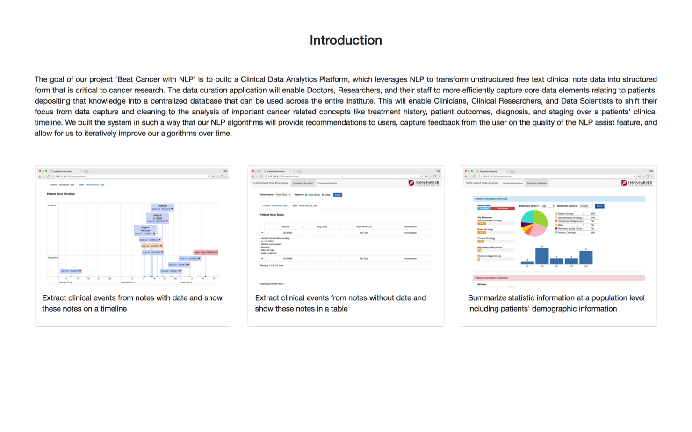

Fight Cancer With NLP
Objectives
Build computational framework that leverages NLP
- Structure unstructured notes
- Foundation to build Analytics Platform
Per Patient
- Extract the timeline of clinical events from notes using NLP
- Stage Info, Time of Tumor Progression and other clinical information
Workflow
Header Identification:
Section Identification:
Event Extraction:
Data Visualization:
Project Wrap-up:
Rule-based method vs clustering method
Pos-tag & classification
Obtain clinical events from sections
Flask web framework
Build an easy-to-use python library

1
2
3
01
02
03
Dashboard

Dashboard

Dashboard